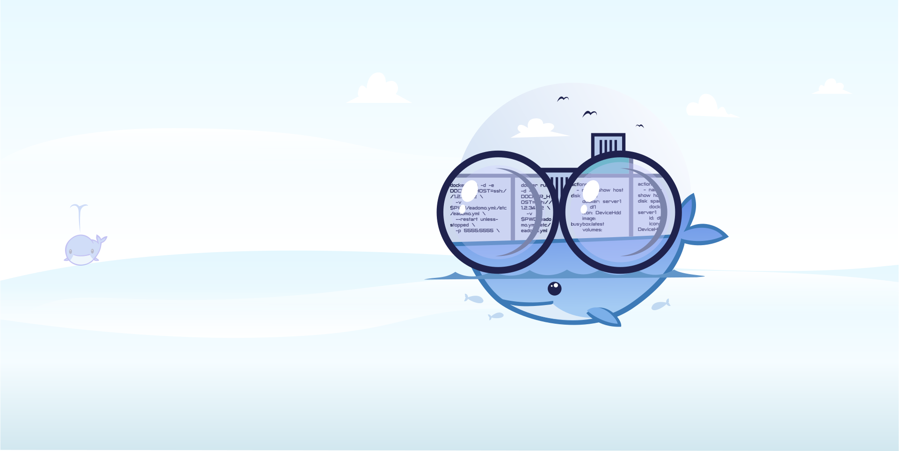
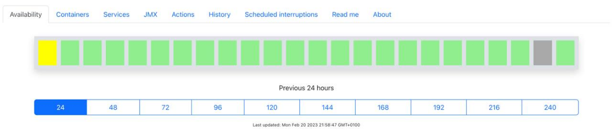
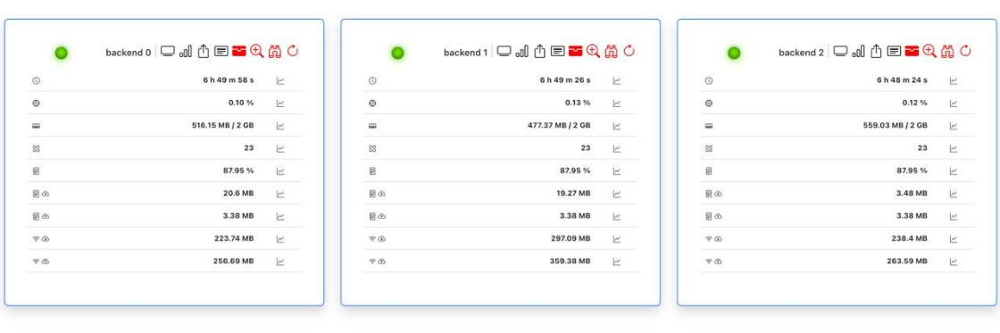
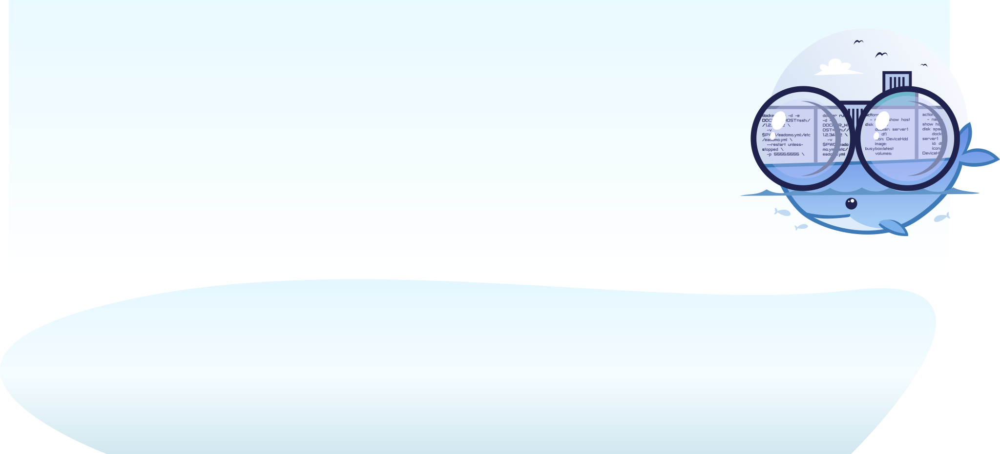

Easy Docker Monitoring
EaDoMo is a good choice if you don't want to spend days configuring enterprise-level monitoring frameworks like Prometheus, Zabbix or similar. It is designed for small non-production deployments and allows you to have an overview of the docker containers and services running within your ecosystem.
EaDoMo is easy to install and easy to run. The only thing it requires to operate is a connection to your Docker socket. Apart from docker containers, EaDoMo can also monitor servers (also those which have a zabbix agent installed) and Java applications providing access to JMX.
EaDoMo uses MongoDB to store data. It can inform you about service outages using Telegram and Slack channels.
EaDoMo is designed for small non-production deployments and allows you to
have an overview of the docker containers and services running within your ecosystem.
EaDoMo is easy to install and easy to run. The only thing it requires to
operate is a connection to your Docker socket. Apart from docker containers, EaDoMo can also monitor servers (also those which have a zabbix agent installed) and Java applications providing access to JMX.
EaDoMo uses MongoDB to store data. It can inform you about service outages using Telegram and Slack channels.
Docker pull command
docker pull eadomo/eadomo
Built-in monitoring

Convenient dashboard

Running
The recommended way to run EaDoMo is using docker - directly or via docker-compose.
To monitor local host:
docker run -d -v /var/run/docker.sock:/var/run/docker.sock \
-v $PWD/eadomo.yml:/etc/eadomo.yml \
--net=host \ # not required, only to simplify host ports monitoring
--restart unless-stopped \
-p 5555:5555 \
--name eadomo \
--env-file env.env \
eadomo/eadomo:latest python3 eadomo.py /etc/eadomo.yml
A sample env file:
ENV_NAME=my-deployment
ADMIN_MODE=1
ADMIN_USER=admin
ADMIN_PASSWORD=secure_password
ACTIONS_ENABLED=1
SESSION_SECRET=random-string
MONGO_URI=mongodb://localhost
DB_NAME=depl_status
ALLOWED_CORS_ORIGINS=https://your.host.com
TELEGRAM_CHAT_ID=12345 # optional, only if telegram is used
TELEGRAM_TOKEN=your-telegram-token # optional, only if telegram is used
SLACK_CHAT=my-system-notifications # optional, only if slack is used
SLACK_TOKEN=your-slack-app-token # optional, only if slack is used
To monitor remote host:
docker run -d -e DOCKER_HOST=ssh://1.2.3.4:22 \
-v $PWD/eadomo.yml:/etc/eadomo.yml \
--restart unless-stopped \
-p 5555:5555 \
--name eadomo \
--env-file env.env \
eadomo/eadomo:latest python3 eadomo.py /etc/eadomo.yml
Or with docker-compose.yml:
version: '3.5'
services:
eadomo:
image: eadomo/eadomo
ports:
- "5555:5555"
volumes:
- ./eadomo.yml:/etc/eadomo.yml
- /var/run/docker.sock:/var/run/docker.sock
environment:
ENV_NAME: my-deployment
ADMIN_MODE: 1
ADMIN_USER: admin
ADMIN_PASSWORD: secure_password
ACTIONS_ENABLED: 1
SESSION_SECRET: random-string
MONGO_URI: mongodb://mongo
DB_NAME: depl_status
ALLOWED_CORS_ORIGINS: https://your.host.com
TELEGRAM_CHAT_ID: 12345 # optional, only if telegram is used
TELEGRAM_TOKEN: your-telegram-token # optional, only if telegram is used
SLACK_CHAT: my-system-notifications # optional, only if slack is used
SLACK_TOKEN: your-slack-app-token # optional, only if slack is used
mongo:
image: mongo:4
volumes:
- mongo:/data/db
volumes:
mongo:
By default EaDoMo exposes port 5555 as an unencrypted HTTP connection and is available in /dashboard context: http://your-host:5555/dashboard. If you want HTTPS, please run it behind a reverse proxy, for instance, NGINX.

Features
Docker containers
EaDoMo verifies the following parameters of docker containers:
- if the container running
- if the container has been restarted recently (planned/unplanned)
- if a port exposed is open and listening
- if a newer image is available
- (on gitlab) if new commits were pushed into the development branch which are not on deployment branch yet
It also gathers statistics on:
- uptime
- memory used
- CPU used
- disk usage
- network traffic
Web services
EaDoMo verifies:
- if a port is listening
- SSL certificate validity
JMX services
EaDoMo gathers statistics on:
- uptime
- memory used
- CPU used
- disk usage
- network traffic
How it works
Docker engine provides itself a lot of monitoring and statistics gathering capabilities, which EaDoMo is making use of. Monitoring of services is done either by simple checking open port availability or, in case Zabbix agent is available, by fetching node information from it. For JMX applications EaDoMo launches a proxy container within the target container namespace which fetches information and provides it to EaDoMo via Docker connection - there is no additional communication channels opened between the monitored host and the host where EaDoMo is running.